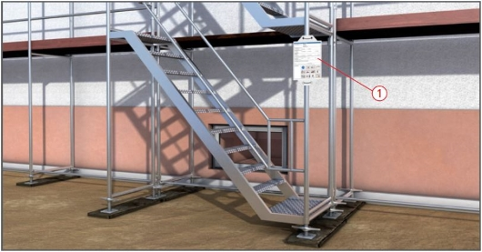
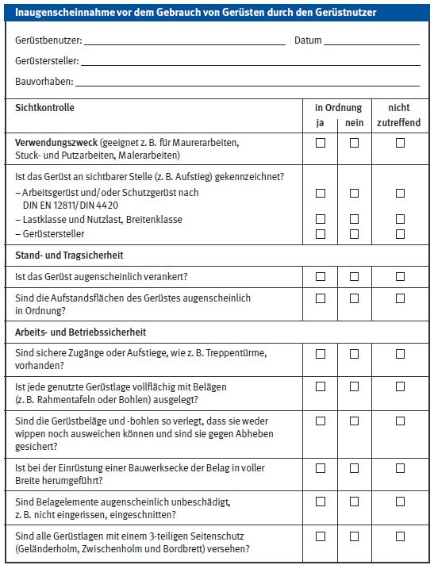
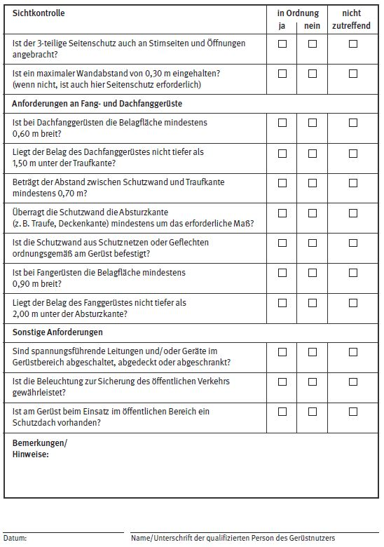

Gerüstnutzung
Plan für den Gebrauch
Inaugenscheinnahme durch den Nutzer
|
 |

Gefährdungen
- Wird eine Inaugenscheinnahme des Gerüstes nach der Fertigstellung bzw. vor der Nutzung nicht oder unzureichend durchgeführt, kann das aufgrund nichterkannter Mängel am Gerüst z. B. zu Absturzunfällen, zum Verlust der Standsicherheit oder der Arbeits- und Betriebssicherheit führen.
- Wenn kein Plan für den Gebrauch vorliegt, kann es zu Fehlhandlungen des Benutzers und damit zu Unfällen kommen.
Schutzmaßnahmen
- Der für die Gerüstbauarbeiten verantwortliche Unternehmer muss das von ihm erstellte Gerüst nach der Montage prüfen lassen. Nach Prüfung ist das Gerüst an gut sichtbarer Stelle zu kennzeichnen
 .
.
- Der Gerüstersteller übergibt den Plan für den Gebrauch an den Gerüstnutzer.
- Der verantwortliche Unternehmer, der Gerüste nutzen lässt, muss vor deren Gebrauch die sichere Funktion und die Mängelfreiheit durch eine Inaugenscheinnahme feststellen lassen.
Plan für den Gebrauch
- Der Plan enthält folgende Angaben:
- Gerüstbauart, z. B. Arbeits- und/oder Schutzgerüst,
- Lastklasse*,
- Breitenklasse,
- Name und Anschrift des Gerüsterstellers,
- Datum der Prüfung nach der Montage,
- Warnhinweise und weitere objektbezogene Angaben,
- Art, Anzahl und Lage der Zugänge,
- Verwendungsbeschränkungen.
* bei mehrlagigen Gerüsten als Summe der gleichmäßig verteilten Verkehrslasten in einem Gerüstfeld.
Prüfungen
Inaugenscheinnahme
- Die Inaugenscheinnahme durch den Nutzer erfolgt auf der Grundlage des Planes für den Gebrauch (u. a. Kennzeichnung, ggf. Prüfprotokoll des Gerüsterstellers) und der Art der auszuführenden Arbeiten durch eine von ihm benannte "qualifizierte Person".
- Das jeweilige Ergebnis ist zu dokumentieren, z. B.
 .
.


07/2021